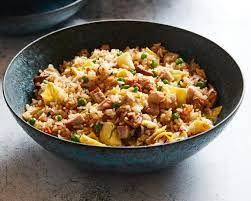

Fried Rice

Ingredients
To create this delicious recipe you will need:
- cold rice
- butter
- veggies
- Toasted sesame oil
- Oyster sauce
- Soy sauce
Instructions
- Scramble eggs.
- Sauté vegetables until soft.
- Stir fry rice on high heat with sesane oil.
- Remove from heat when golden brown.
- Taste and season.
Voila! You are now an expert chef! To further your
culinary skills, visit Chef School.